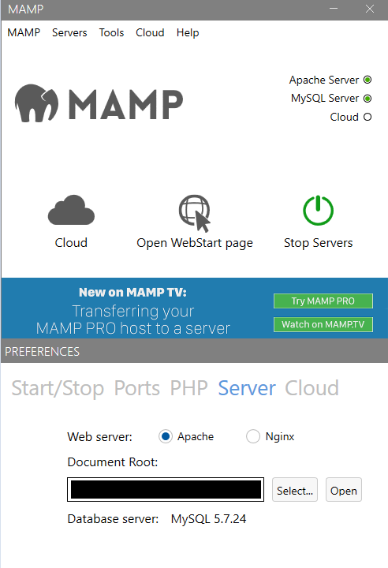

First Android Game - Part 20 - Save data - MySQLOct 08, 2023This is part 20 of making my first Android Game. If you missed part19, you can find it here. There are weapons that the user can buy. If the user starts the game over and come back into the game, it would be great if what they bought are carried over. It can be frustrating for the user if all the weapons are gone. We will be exploring different ways to save data. The first one we will explore is MySQL. I will be following this Tutorial playlist by BoardToBitsTo create a database I will need to setup a local server. Therefore, I will download MAMP from this site. When I open MAMP, I will first go to MAMP > Preferences > Server and change the Document Root. This is where all the PHP files will be stored

I'll need setup the database. Select the Open WebStartPage. A http://localhost/MAMP/ will open. localhost refers to the root that we set in Web Server Document Root. MAMP is the splash page that MAMP made. We will select the hyper link that says phpMyAdminAt the home page select user accounts. You will see a "root" user account. This is the default. If you decide to make your application for public to use, you should create your own user account with a new user name and passwordNow we need to create a database to connect. Select database, I will name my database unity-sql-learning. Select createCreate a table for the database. Name it player and set number of columns to 5There are 5 rows where we need to populate information about them. Each row we will need to provide information about them. Those are the name, type, length/values, default, coaliation, Null, index, A_I, and comments.The first information is a unique identifier called id. We want the id to differentiate the players. Type is int, give a length 10. We won't worry about default, coliation and attributes. NULL is false. The index will be PRIMARY. A_I is autoincrement, set that to true. Next one is username, type is VARCHAR which is a combination of letters and numbers. Max length is 16 character. Skip default(because we want someone to populate this field), coaliation, attribute, null. Index needs to be unique. Skip A_I. Next is password, but we won't store password as plain text for security reasons. We will use hash and salt. Set both to VARCHAR because a good password have different characters. Length is 100 and 50 respectively. Skip the rest. Lastly is the score - this is the game data we want to store. Type is INT. Length is 10. Default as As defined and set to 0 because by default the score is 0. Skip the rest. Make sure you save. I will be using sublime text to code my php. Sublime can be downloaded here. In Unity, we will create 4 scenes: Main Menu, Login, Register, Game. Main Menu will have 3 buttons: RegisterMenu, Login, Play Game and a text that tells us if the user is logged in. RegisterMenu has a button that says register and two input fields that lets user enter their username and password. Login Scene has the same two inputfields as Register but the button will say Log in. Game Scene will have a button the increments the score and a button that exits the game and go back to Main Menu scene. Recent blogsSee all blogs
 At the home page select user accounts. You will see a "root" user account. This is the default. If you decide to make your application for public to use, you should create your own user account with a new user name and password
At the home page select user accounts. You will see a "root" user account. This is the default. If you decide to make your application for public to use, you should create your own user account with a new user name and password
 Now we need to create a database to connect. Select database, I will name my database unity-sql-learning. Select create
Now we need to create a database to connect. Select database, I will name my database unity-sql-learning. Select create
 Create a table for the database. Name it player and set number of columns to 5
Create a table for the database. Name it player and set number of columns to 5
 There are 5 rows where we need to populate information about them. Each row we will need to provide information about them. Those are the name, type, length/values, default, coaliation, Null, index, A_I, and comments.
There are 5 rows where we need to populate information about them. Each row we will need to provide information about them. Those are the name, type, length/values, default, coaliation, Null, index, A_I, and comments.
 The first information is a unique identifier called id. We want the id to differentiate the players. Type is int, give a length 10. We won't worry about default, coliation and attributes. NULL is false. The index will be PRIMARY. A_I is autoincrement, set that to true. Next one is username, type is VARCHAR which is a combination of letters and numbers. Max length is 16 character. Skip default(because we want someone to populate this field), coaliation, attribute, null. Index needs to be unique. Skip A_I. Next is password, but we won't store password as plain text for security reasons. We will use hash and salt. Set both to VARCHAR because a good password have different characters. Length is 100 and 50 respectively. Skip the rest. Lastly is the score - this is the game data we want to store. Type is INT. Length is 10. Default as As defined and set to 0 because by default the score is 0. Skip the rest. Make sure you save.
The first information is a unique identifier called id. We want the id to differentiate the players. Type is int, give a length 10. We won't worry about default, coliation and attributes. NULL is false. The index will be PRIMARY. A_I is autoincrement, set that to true. Next one is username, type is VARCHAR which is a combination of letters and numbers. Max length is 16 character. Skip default(because we want someone to populate this field), coaliation, attribute, null. Index needs to be unique. Skip A_I. Next is password, but we won't store password as plain text for security reasons. We will use hash and salt. Set both to VARCHAR because a good password have different characters. Length is 100 and 50 respectively. Skip the rest. Lastly is the score - this is the game data we want to store. Type is INT. Length is 10. Default as As defined and set to 0 because by default the score is 0. Skip the rest. Make sure you save.
 I will be using sublime text to code my php. Sublime can be downloaded here. In Unity, we will create 4 scenes: Main Menu, Login, Register, Game. Main Menu will have 3 buttons: RegisterMenu, Login, Play Game and a text that tells us if the user is logged in. RegisterMenu has a button that says register and two input fields that lets user enter their username and password. Login Scene has the same two inputfields as Register but the button will say Log in. Game Scene will have a button the increments the score and a button that exits the game and go back to Main Menu scene.
I will be using sublime text to code my php. Sublime can be downloaded here. In Unity, we will create 4 scenes: Main Menu, Login, Register, Game. Main Menu will have 3 buttons: RegisterMenu, Login, Play Game and a text that tells us if the user is logged in. RegisterMenu has a button that says register and two input fields that lets user enter their username and password. Login Scene has the same two inputfields as Register but the button will say Log in. Game Scene will have a button the increments the score and a button that exits the game and go back to Main Menu scene.